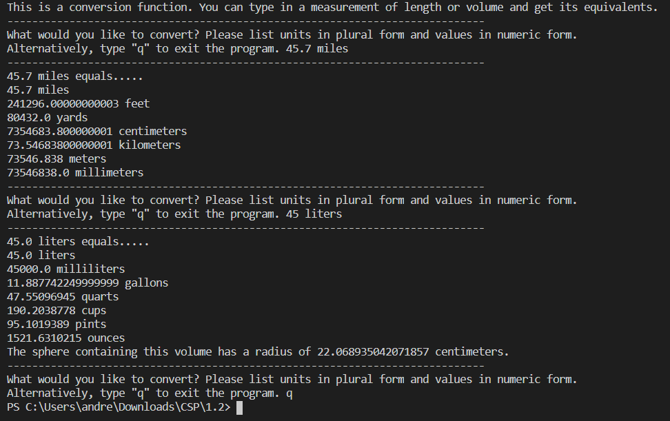

Date: Feb 2021 - Apr 2021 Course: AP Computer Science Principles Objective: Develop a program to convert different units of measurement to each other
This was a project that I completed as part of the AP Computer Science Principles Create Task, as part of the wider AP Computer Science Principles Digital Portfolio, which itself is part of the larger AP Computer Science Principles AP test. For the AP Create Task, I created a program to convert different measurements of length and volume to each other (for example, converting miles to centimeters). As part of the AP Create Task, I wrote a writeup on the program’s function, as well as how the program incorporated sequencing, selection, and iteration, how the program executed two separate code blocks, and how the program used lists to manage complexity, thus demonstrating and growing my skill in technical and academic writing. Also part of the AP Create Task was the creation of a video to demonstrate the program running, and its inputs and outputs. Furthermore, within my program code, I was able to develop my use of iteration and algorithms further, by using an algorithm to iterate through a dictionary of conversion factors and using that to derive a conversion factor for each unit of measurement, and was able to learn to use new methods such as .quit() that I had not used previously. The primary challenge I was able to overcome throughout the project was learning to tailor my code to a rubric or instructions. I incorporated lessons learned from a previous project that was also graded with the AP CSP Create Task rubric, which I did not do that well on due to not completely following the rubric and instructions. By the time I tackled my actual create task, I knew to tailor my code and project to the requirements of the rubric. Thus, when I realized that my initial code was too short to meet most of the rubric requirements, despite more or less completing the objective, I was able to expand on the code and thus fulfill the requirements on the rubric, netting myself a 5 on Mr. Brown’s evaluation, rather than the 4 that I had earned with Mr. Brown’s evaluation on the previous project.